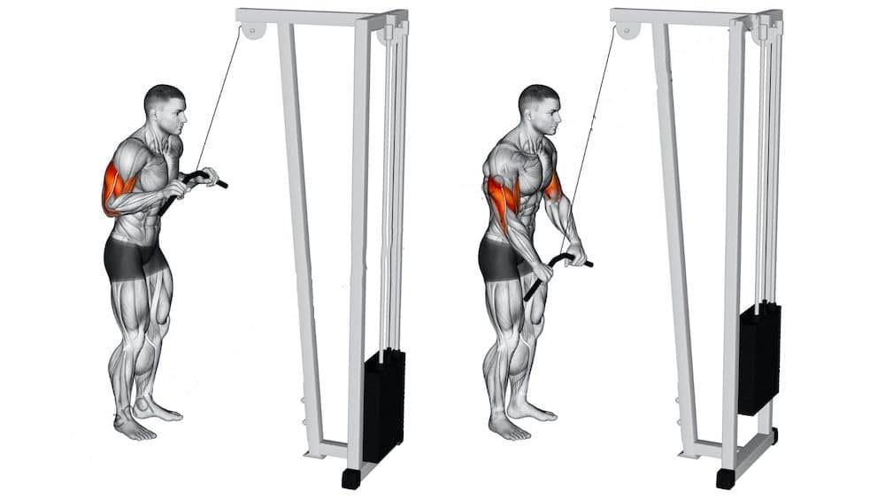
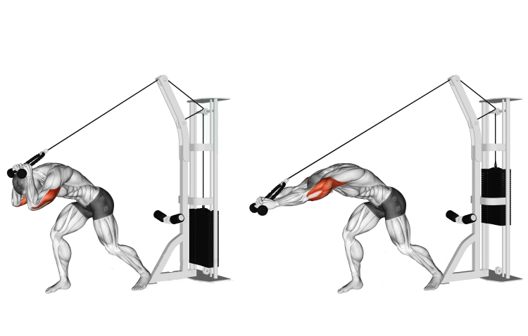
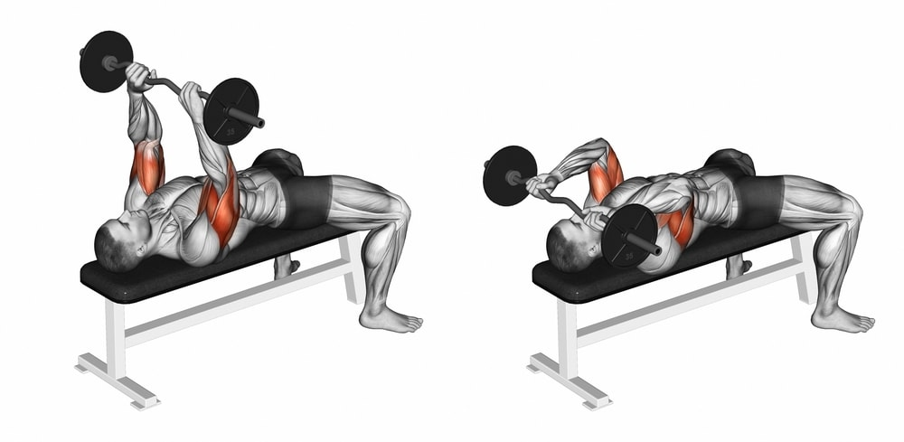

High Pulley Tricep Extension
Step:1 Place the pulley as high as possible to achieve the best angle for activation (if not already there)
Step:2 Grab a straight bar attachment and connect it to the machine via carabiner
Step:3 Ensure you have good foot placement to maintain a stable body throughout the movement
Step:4 Grab the bar and bring it to about chest level your elbow should be at about a 90 degree bend
Step:5 push the bar down utilizing the triceps (a good cue is to imagine oneself breaking the bar in half on the way down)
Step:6 Return to starting position slow and controlled to maximize effectiveness
Overhead Tricep Extension
Step:1 Place the pulley as high as possible to achieve the best angle for activation (if not already there)
Step:2 Grab a rope handle attachment and connect it to the cable via carabiner
Step:3 Grab the handle then turn around to face away
Step:4 Take a step forward then bring the ropes in front of you
Step:5 Ensure that your elbows form a 90 degree angle with your arms in front of you
Step:6 Press your arms out to ensure they are straight then slowly return back to the starting position
Skull Crushers
Step:1 Find a flat bench and grab a easy bar with some weight
Step:2 Lay flat on your back with the bar straight in front of you
Step:3 While maintaining the elbows in the same position as before slowly lower the bar as if it was to touch your forehead
Step:4 Once the bar is close to your forehead press the bar back up to the starting position